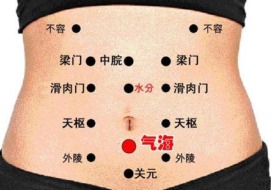
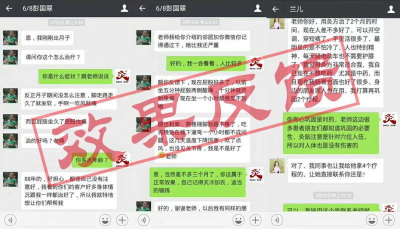
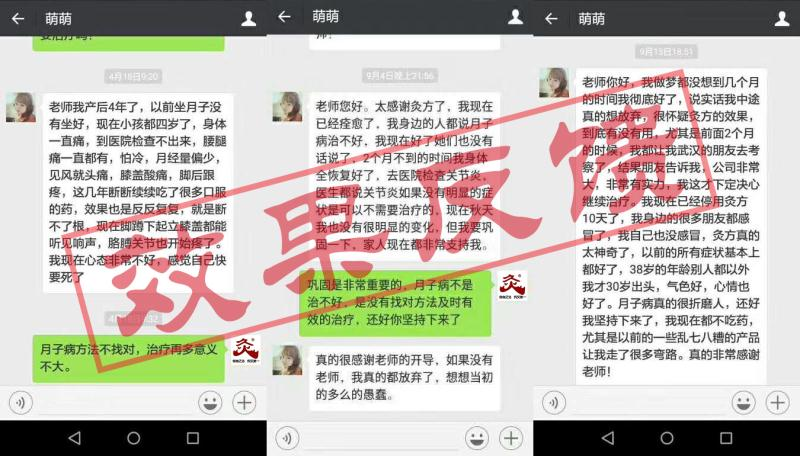
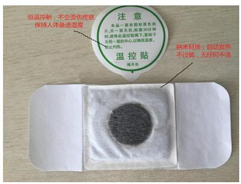

以下关于月子病的相关知识及治疗方法大家一定要认真看，只有这样才能更好的防止月子病的蔓延及折磨，通过科学合理的手段达到想要的结果。月子病不可怕，可怕的是没有一个好的方案及科学的指导。我们希望更多的月子病朋友能从中受益，恢复自信，获得健康!
产后出现手腕疼、大姆指关节疼痛，后背疼痛，产后咳嗽，汗多，大腿根部疼痛，膝盖疼、腰疼，怕风怕冷，身体凉，关节响，头痛，头晕等等症状，部分患者还有眼眶疼痛、眼睛干涩或多泪、哭泣，发脾气，视物模糊、体弱多病、屁股疼等症状这些统称为月子病。
根据最新数据显示，月子病不及时治疗或方法不对导致的风湿、类风湿比例高达90%以上，(月子病所有指标检查又都是正常的)月子病导致产后妇女的身心受到了极大的摧残，有的人一年四季不敢出门，活动受限，甚至终身瘫痪!
而针对月子病的治疗，医学界公认的是只要早日发现异常，早日治疗都可以有效控制病情，恢复健康的，而在治疗方法上医学界的共识是灸疗，首先这种方法适合产后的妇女，因为它是对身体没有伤害，而且直接经过皮肤渗透，根据穴位入灸，达到祛湿拔寒，疏通经络恢复气血的一个过程。
治月子病一定要对症，月子病不是亚健康，亚健康可以通过饮食、运动等方法进行调理。但月子病已经超出了亚健康的范畴，这就是为什么很多月子病人越治越严重，最后出现产后风湿的直接原因所在，如果月子病人知道了发病的规律那么就应该清楚的知道靠保健品、食品是没有一点帮助的。
任何形式的口服方法都是是入脏腑的，而月子病的本质是湿气寒气在经络里，还没有深入到骨髓，因为寒邪一直没有祛除，经络气血瘀滞就导致特别怕风怕冷，疼痛的现象。
治月子病一定要找对方法，鎮痛灸组合灸方不是神丹妙药，但如果月子病人出现了怕风怕冷，手、手臂、胳膊、脚、膝盖、腰、后背等关节鎮痛灸组合灸方可以负责任的十拿九稳，因为鎮痛灸组合灸方是根据穴位入灸，持续不断的进行最直接、方便的渗透来祛湿拔寒，疏通经络，市面上没有任何一种方法比鎮痛灸组合灸方靠谱，科学，也是对月子病人没有任何副作用的绿色治疗方法。哺乳期也可以放心使用。月子病更多生活方式的注意可以添加微信：进行咨询
第一：祛湿拔寒，98%的月子病均存在湿气寒气太重，湿气寒气重导致怕风、怕冷、汗多，无力，体虚等典型症状，鎮痛灸组合灸方很好的利于持续的热能针对穴位来进行灸疗，让体内的湿气寒气得到较好的排出。
第二：疏通经络，月子病经络不通会出现关节酸、麻、疼，尤其是腿关节、手腕、手臂、脚、甚至臀部等关节部位，出现这一问题主要是月子病经络不通所致，直接针对酸、麻、痛点进行灸疗、热疗，药疗，大大解决了月子病关节出现的各种不适。
第三：恢复气血。产后头痛，失眠，肠胃不适，易感冒，身体冰凉，免疫下降，包括一些常见的妇科炎症都跟气血有关，而湿气寒气、经络通了以后人体的气血自然好了，镇痛灸方最后一个阶段是根据气血的穴位来进行治疗。
鎮痛灸组合灸方根据每个人的症状选择穴位，症状不同穴位不同，效果也不同，入灸的时间也各有差异，必须循序渐进治疗，在治疗上一定要配合好，切不可三天打鱼两天晒网，这样会得不偿失，月子病可大可小，不要掉以轻心。另外要定期的反馈自己的身体情况，随时进行调整。更多关于月子病的方法可以加微信：进行咨询。
【刚出月子，腿疼、屁股疼、怕风， 三个月效果反馈，还介绍邻居】
【用2个月，家人都在用，打算再巩固，同事看到变化也纷纷来咨询】
【产后4年的月子病 曾想过放弃 通过组合灸方治疗现已痊愈 】
月子病的本质是体内湿气寒气太重，经络不通，这也就是为什么月子病天气变化、遇风、流汗等情况会出现身体阳气的不足而寒冷，导致病邪入侵，治疗不及时出现风湿类风湿，关节疼等严重的症状。
通过鎮痛灸组合灸方治疗月子病可以有效的祛湿拔寒，疏通经络，从而达到目的。而除了鎮痛灸组合灸方以外一些生活方式上也要格外注意，汗多要及时的擦干，还要勤换衣服，尤其是内衣，条件允许晚上可以适当的开空调，温度保持在28度左右，自动风为宜，风扇不能直接对人或关节部位吹。
太多的口服、传统治疗方法会导致月子病的脾胃功能失调，睡眠质量等不好等副作用，最后体质越来越差，病情严重。鎮痛灸组合灸方虽然注重穴位，看上去有些复杂，而且有的人还会觉得穴位不好找，但如果透过现象看本质，你会发现鎮痛灸组合灸方是祛湿拔寒，疏通经络，恢复气血的好方法，跟任何传统方法都不同，不仅直接，有效，快速，而且对身体没有任何副作用，哺乳期的人都可放心使用。更多关于鎮痛灸组合灸方对月子病的了解可以加微信